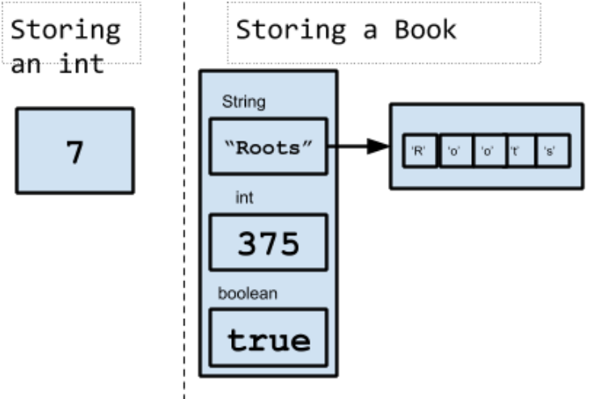

A Guide to Java
A Guide to Java
Chapter 9
Classes For Creating Objects
The examples of class that we’ve seen so far all have a main method that runs top to bottom (and may in turn call other methods in the same class or from library classes such as Scanner). Writing code in this way is called procedural programming. We will now look at another way to organize code, called Object-oriented programming (sometimes abbreviated OOP).
First, let's understand how object-oriented programming is helpful. So far, we’ve used variables to store data-- such as a person’s age. This is a simple piece of information that can be stored in a primitive data type. But what if we want to store something more complex into a variable, say a book (perhaps Harper Lee’s To Kill a Mockingbird or James Baldwin’s Go Tell It On The Mountain)? Can’t we think of a book as a piece of data just like an age is? The problem is that a “book” is actually made up of other pieces data-- it has an author, as well as a title, as well as other data. This is called a composite or compound data type. In OOP, we can define what we mean by a Book (including what data it contains and what we can do with a Book) by writing a class.
In OOP, only one class in a project implements a main method. All other classes serve as “blueprints” for creating objects (data types that are more complex than primitive types, like our Book). Objects have both properties/data and actions. The class defines the instance variables (also called fields, instance data, or data fields) that hold values for the properties, and methods that define the actions for objects.
Let’s use our specific example of a book to illustrate this idea. The following sections explain how we might go about it.
Instance variables
The first question to ask about our book is what data does it have? Well, a book has a title. It also has a certain number of pages. It might be hardcover or might not be. Let’s define variables to hold all this information for a Book object. Note that I’ve not included author as a field, nor have I included the actual text inside the book, but I certainly could have. These kinds of decisions are up to you as the programmer.
//First we declare the class (in a header). For now, declare classes as public.
//By convention, class names are capitalized
public class Book
{
//After a curly brace, we define our instance variables (or data fields, instance data),
//using camelCasing for variable names.
//Note that these variables are not static, because their values can be different for each book
private String title;
private int numPages;
private boolean isHardcover;
}
Instance variables can be of any type-- int (integer), double (floating-point decimal), String (text), boolean (true/ false), or even non-primitive types from other classes (including classes we write). For example, a Book might have a field of type PublishData , where PublishData is an instance of a class we write to create objects that hold information about publishing (date, ISBN, etc.). This is called a composition or "has-a" relationship, because Book "has a" Publisher. Note that String is uppercase (because a String is itself an object from the String class); the others are lowercase. Note also that the fields are not declared static. This is because each Book object that we create can have its own data (a different title, etc.). Static variables apply to the whole class rather than individual objects (recall the use of static methods and data in the Math class, for instance).
This illustration may help you picture how data is stored in an object vs. a primitive type. Notice that the String variable in Book is itself an object of the String class, comprised of chars.
Constructors
Next comes the constructor. The constructor is similar to a method, in that it consists of commands. The role of the constructor generally is to assign initial values to the instance variables. In the following example, when a new Book object is created, it has default data of "Untitled Book", 0, and true for title, numpages and isHardcover, respectively.
The constructor header consists of the keyword public, followed by the exact name of the class and a set of parentheses. It might look like this for our Book class:
public Book() //this MUST be the same as the name of the class.
{
title = "Untitled Book"; //set the title of the book. etc
numpages = 0;
isHardcover = true;
}
You might be wondering how the constructor gets called/invoked. You’ve actually already done this without realizing it. Every time you write the keyword new, as in Scanner kbd = new Scanner(System.in), the new keyword tells the compiler: 1) Find a class called Scanner and 2) Run its constructor (in this case, passing in the parameter System.in).
So, once we’ve written all the code for our Book class, we’ll be able to write Book b = new Book() (typically in another class altogether) and we will have an instance of the Book class with the data set by the constructor.
Other Methods
Now it’s time to define actions we want to be able to perform on or with a Book object. For example, perhaps we want to be able to change its title or find out how long it is.
We would write:
public void setTitle(String newTitle)
{
//set the title variable to the new title
title = newTitle;
}
and
public int getNumPages()
{
return numPages;
}
These types of methods are common. They’re called “getters and setters” (or, more formally, accessors and mutators). Notice how the public methods can be used by another class to find out and/or change the values of the private fields (more on that in the next section).
Again, you might be wondering why these methods are missing the static keyword that we’ve used earlier. This is because static methods (and variables) apply to the class itself, not to specific instances of the class. Methods that make use of instance data are not static (because, for example, getnumPages may return 86 for one Book object, but 259 for another). In other words, static methods always give the same result within a class, whereas non-static methods can behave differently based on the data in the particular instance to which they are applied).
What else might we need to do other than get or set values from our Book? Well, perhaps we would like a method to display information about it. We might write:
public void displayInfo()
{
System.out.print("This book is called " + title);
System.out.println(" and has " + numPages + " pages.");
}
Private vs. public visibility
Note that instance variables are usually declared with keyword private. What does this mean? Private means that these variables are only visible to the methods within their class. This is a concept called information hiding or encapsulation. Methods, on the other hand, are typically declared public so that they can be accessed by other classes.
For example, using our Book class, suppose a method in another class creates a Book instance called myBook. That method could not then say myBook.title = “Hamlet” (because it can’t access the private title variable), but it could say myBook.setTitle(“Hamlet”); (because the method is public and therefore usable by the other class). To see this yourself, you can try writing the code above and note the error that the first line produces.
A method might be declared private, however, if its only purpose is to support another method in the same class (remember that private class members are visible anywhere within the class). Here’s a printStars methods that we might use to print a line of asterisks within the displayInfo method.
…
public void displayInfo()
{
printStars();
System.out.print("This book is called " + title);
System.out.println(" and has " + numPages + " pages.");
printStars();
}
/* method declared private because it is only being used by another method in the same class
*/
private void printStars(){
System.out.println("**************************");
}
...
Driver or Runner classes
In applications you write, you will have one class that controls the action, so to speak. These are like the classes you wrote in the beginning of the course-- before you arrived at this chapter and learned how to write your own classes.This class does not need to have a constructor (because it is not actually constructing any objects of its own type). Instead, is needs to have a main method with the (familiar, by now) header:
public static void main (String [] args)
Your driver class will typically create objects and call methods from other classes, be they classes that you wrote or other classes that you imported into the project, as well as its own methods, where present).
Here’s how a driver class might create and manipulate a Book object:
public class BookRunner {
public static void main(String[] args) {
Book b = new Book();
b.setTitle("Gone With the Wind");
b.displayInfo();
System.out.println("Hardcover: " + b.getIsHardcover();
}
}